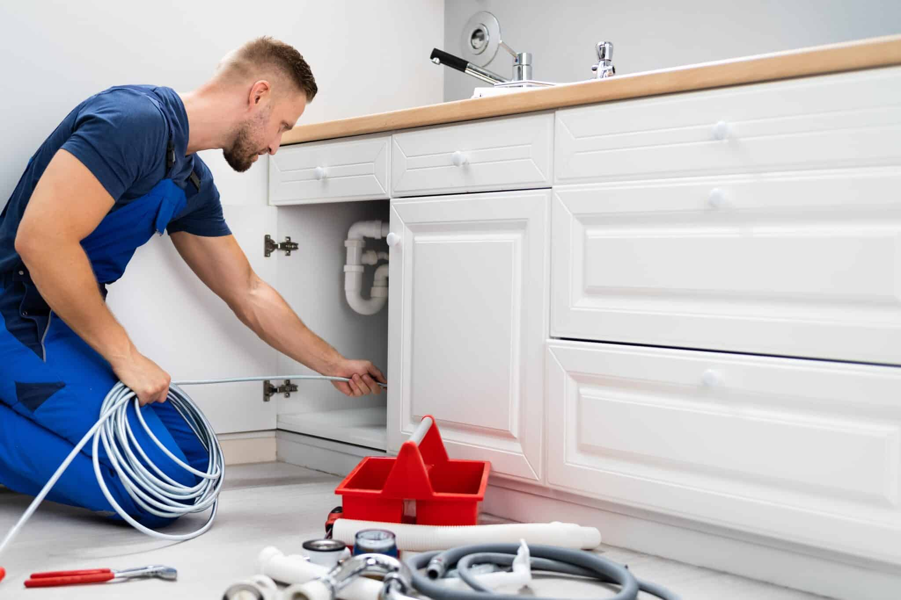

نحن الخيار الأول لفتح انسداد المجاري بأحدث تقنيات الكمبروسر العالمية. خدمة احترافية ونظيفة على مدار الساعة.
نقدم مجموعة متكاملة من حلول الصرف الصحي باستخدام أحدث المعدات العالمية لضمان أفضل النتائج.
استخدام ضغط الهواء العالي لتفتيت أصعب انسدادات مواسير الصرف الصحي بسرعة فائقة وبدون تكسير.
فتح انسداد أحواض المطابخ ومواسير الحمامات وإزالة الترسبات الدهنية والصلبة بشكل نهائي.
أحدث الأجهزة الإلكترونية لكشف أماكن تسرب المياه بدقة متناهية دون الحاجة لتكسير الجدران.
فريقنا مدرب على التعامل مع كافة أنواع الانسدادات بأعلى معايير السلامة والجودة.
نمتلك أحدث سيارات الكمبروسر وأجهزة الضغط التي تضمن حل المشكلة من الزيارة الأولى.
ندرك أهمية الوقت في حالات الطوارئ، لذا نضمن لك الوصول في الوقت المحدد تماماً.
نحن نغطي كافة أحياء الرياض، ويصل فريقنا عادة خلال 30 إلى 45 دقيقة من وقت الاتصال.
نعم، نقدم ضماناً لمدة 30 يوماً على كافة أعمال التسليك لضمان عدم تكرار المشكلة.
نعتمد بشكل أساسي على ضغط الهواء والماء (الكمبروسر)، وهي تقنية آمنة تماماً على المواسير والبيئة.
لا تتردد، نحن متاحون لخدمتك الآن وعلى مدار الساعة.